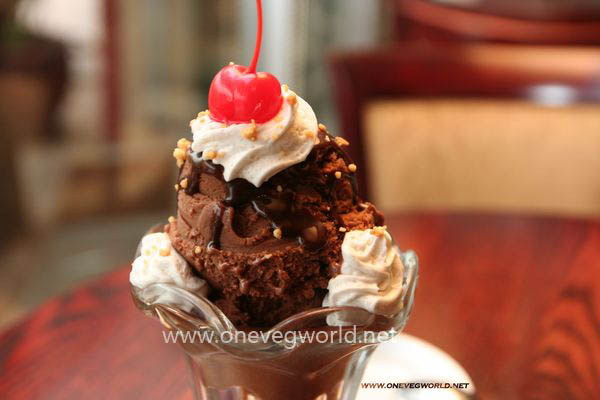

Chocolate velvet ice cream
Chocolate was one of the first ice cream flavors, created before vanilla, as common drinks such as hot chocolate, coffee, and tea were the first food items to be turned into frozen desserts.
In 1775, Italian doctor Filippo Baldini wrote a treatise entitled De sorbetti, in which he recommended chocolate ice cream as a remedy for various medical conditions, including gout and scurvy.
Making this delicious Chocolate velvet ice cream is easier than you may think with step-by-step help. It's guaranteed to be a new family favourite any time of year

Ingredients
- 6 ounces fine-quality bittersweet chocolate (not unsweetened)
- 1 cup sugar
- 1/2 cup unsweetened Dutch-process cocoa powder
- 1 1/2 cups heavy cream
- 1 cup milk
- 3 large egg yolks
Method
- Chop chocolate. In a heavy saucepan whisk together sugar and cocoa powder until combined and whisk in cream and milk.
- Bring mixture just to a boil, stirring occasionally. In a bowl beat yolks until smooth.
- Add hot cream mixture to yolks in a slow stream, whisking, and pour into pan.
- Cook custard over moderately low heat, stirring constantly, until a thermometer registers 170° F.
- Remove pan from heat and add chopped chocolate, whisking until melted. Pour custard through a sieve into a clean bowl and cool.
- Chill custard, its surface covered with plastic wrap, at least 3 hours, or until cold, and up to 1 day.
- Transfer custard to bowl of a standing electric mixer and beat just until thick and fluffy. Freeze custard in an ice-cream maker.
- Transfer ice cream to an airtight container and put in freezer to harden.
Nutritional Information
| Calories |
323 |
| Fat |
| 21 g(32%) |
| Carbohydrates |
36 g(12%) |
| Protein |
4 g(8%) |
| Saturated Fat |
13 g(63%) |
| Sodium |
29 mg(1%) |
| Polyunsaturated Fat |
1 g |
| Fiber |
3 g(10%) |
| Monounsaturated Fat |
7 g |
| Cholesterol |
107 mg(36%) |
Recipe video